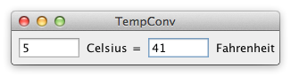

Challenge
Bidirectional data flow, user-provided text input.
Criteria
- Build a frame containing two textfields TC and TF representing the temperature in Celsius and Fahrenheit, respectively.
- Initially, both TC and TF are empty.
- When the user enters a numerical value into TC the corresponding value in TF is automatically updated and vice versa.
- When the user enters a non-numerical string into TC the value in TF is not updated and vice versa.
- The formula for converting a temperature C in Celsius into a temperature F in Fahrenheit is F = C * (9/5) + 32.
- The formula for converting a temperature F in Fahrenheit into a temperature C in Celsius is C = (F - 32) * (5/9).
Temperature Converter increases the complexity of Counter by having bidirectional data flow between the Celsius and Fahrenheit inputs and the need to check the user input for validity. A good solution will make the bidirectional dependency very clear with minimal boilerplate code.
Temperature Converter is inspired by the Celsius/Fahrenheit converter from the book Programming in Scala. It is such a widespread example—sometimes also in the form of a currency converter—that one could give a thousand references. The same is true for the Counter task.

Code
After opening a code link below, hit the '.' key to open GitHub's browser editor for improved reading experience.